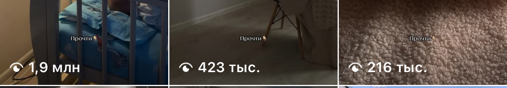

Катерина Арта · @katyarta
Инструкция: как создать свой скилл в Claude
Record a skill: показываешь задачу один раз, дальше Claude повторяет её сам
Record a skill: показываешь задачу один раз, дальше Claude повторяет её сам
В приложении Claude есть кнопка Record a skill. Ты включаешь запись, делаешь свою обычную задачу и проговариваешь вслух, что делаешь и зачем. Claude смотрит на экран, слушает и собирает из этого навык: записанную инструкцию, которую потом запускает снова и снова одинаково
Это как новая помощница в первый день. Ты один раз показываешь ей задачу и объясняешь логику. Дальше она делает сама, а ты только проверяешь результат
Инструкция ниже - семь шагов по экрану. У каждого шага три части: куда нажать, что увидишь, что это тебе даёт. Дальше - шесть задач эксперта и блогера, на которые стоит поставить первый навык, и три места, где застревают почти все
Через 20 минут у тебя первый навык, а не «когда-нибудь разберусь»
Куда нажать. Открой приложение Claude. В поле ввода задачи есть переключатель Chat / Cowork: выбери Cowork
Что увидишь. Под полем ввода подсветился Cowork, слева от него значок плюса, ниже строка «Project or folder»
Что это даёт. Ты в том режиме, где Claude умеет смотреть на экран и работать в программах. В обычном чате записи навыка нет

Куда нажать. Плюс слева в поле ввода. В меню пять пунктов: Add files or photos, Record a skill, Skills, Connectors, Plugins. Нажми «Record a skill». Запасной вход: Customize → Skills → Add → Record your screen
Что увидишь. Небольшое окно «Record a skill». В нём написано, что записываются экран, клики, набор текста и голос, а потом всё это отправляется Claude и превращается в повторяемый навык. Ниже предупреждение: не вводить пароли и не показывать личную переписку, пока идёт запись. Внизу кнопки «Cancel» и «Start recording», справа значок микрофона с выбором устройства: по умолчанию «System default»
Что это даёт. Ты точно знаешь, что именно записывается, и можешь закрыть лишние окна до старта

Куда нажать. Убедись, что значок микрофона включён: голос для навыка важнее кликов. Если микрофонов несколько, выбери нужный из списка. Нажми «Start recording»
Что увидишь. Окно закроется, появится маленькая панель записи: надпись «Capturing», счётчик шагов «step», значок микрофона с полоской громкости и две кнопки: «Discard» и «Done»
Что это даёт. Запись пошла. Каждое твоё действие на экране считается шагом, счётчик растёт

Куда нажать. Никуда специально. Делай задачу так, как делаешь обычно: открывай файлы, копируй, пиши. И говори вслух три вещи: что делаю, зачем, чего не делаю
Открываю заметки. Беру сегодняшнее голосовое, это черновик поста. Копирую текст в Claude. Прошу написать пост в моём стиле: короткие фразы, без воды, без вопроса в начале. Если получается длиннее полутора тысяч знаков, режу. Готовый пост сохраняю в папку «Посты» файлом с сегодняшней датой
Не уходи в другие вкладки и чаты: Claude запишет и это как часть задачи. Лимит записи около десяти минут, ближе к концу панель предупредит
Что увидишь. Счётчик шагов на панели растёт, полоска микрофона дёргается от голоса
Что это даёт. Claude получает не набор кликов, а логику: почему ты делаешь именно так. Это и превращается в навык

Куда нажать. На панели записи кнопка «Done». Кнопка «Discard» рядом выбрасывает запись целиком, её нажимай, только если хочешь начать заново
Что увидишь. На панели появится «Processing». Потом в чате Cowork Claude пересказывает, что увидел, может задать один-три уточняющих вопроса и показывает черновик навыка: название, когда включать, что делать по шагам
Что это даёт. Навык ещё не сохранён, это черновик. Самый удобный момент поправить то, что Claude понял не так

Куда нажать. В черновике навыка раскрой блок «Content». Прочитай четыре вещи: когда навык включается, что делает по шагам, чего не делает, в каком виде отдаёт результат. Что не так, поправь прямо в тексте. Потом «Save». Если Claude предложил обновить уже существующий навык, кнопка будет «Update»
Что увидишь. Навык появился в Customize → Skills → Yours. Оттуда его можно править, выключать, удалять и делиться. Кнопка Add там же: Upload skill, Create a skill, Create with Claude, Record your screen
Что это даёт. Навык сохранён и живёт отдельно от чата, в котором ты его записала

Куда нажать. Открой новый чат в Cowork. Напиши задачу так, как формулируешь её обычно: «сделай пост из сегодняшнего голосового». Claude сам подхватит подходящий навык. Или набери в поле «/»: появится список твоих навыков, выбери нужный. Бери пример, отличный от того, что был на записи
Что увидишь. Claude идёт по шагам навыка и показывает, что делает. Если задача проходит через браузер, приложение попросит доступ к нему: включи, иначе на этом шаге всё остановится
Что это даёт. Первая задача, которая теперь повторяется без тебя. Когда навык отработал правильно два-три раза, попроси: «поставь этот навык по расписанию» и ответь, когда запускать. Компьютер в это время должен быть включён и не спать

У каждого: что делать на экране во время записи, что сказать вслух, что получишь потом
На экране
Открываешь комментарии под тремя последними постами и папку сохранённого. Выписываешь вопросы и повторы в заметку
Вслух
«Ищу вопросы, которые задают чаще одного раза. Реклама и «спасибо» не считаются. Из каждого вопроса делаю тему поста одной строкой»
Получишь
Список из 5-10 тем на неделю за пару минут вместо часа скроллинга
На экране
Копируешь текст голосового или заметку, вставляешь в Claude, просишь пост, правишь, сохраняешь
Вслух
«Пишу в своём стиле: короткие фразы, без воды, без вопроса в начале. Без длинных тире. Длина до полутора тысяч знаков. Сохраняю в папку «Посты» файлом с датой»
Получишь
Черновик поста в твоём голосе из любой надиктовки. Правишь пять минут вместо тридцати
На экране
Открываешь пост, читаешь комментарии, раскладываешь на три колонки: вопросы, боли, возражения
Вслух
«Каждый комментарий отношу к одной колонке. Цитаты сохраняю дословно, своими словами не пересказываю. В конце пишу, какие три темы просят чаще всего»
Получишь
Готовый разбор по каждому посту: живой язык аудитории для следующих текстов и для продукта
На экране
Открываешь статистику, выписываешь просмотры, подписки, охват лучшего поста и рилса в таблицу
Вслух
«Беру только эти пять цифр. Сравниваю с прошлой неделей. Пишу одной строкой, что выросло, что упало»
Получишь
Понедельничная сводка за минуту, а не «потом посмотрю»
На экране
Берёшь пост, режешь на 8-10 слайдов: обложка, мысль на слайд, последний слайд с призывом
Вслух
«Обложка - самая сильная фраза поста. На слайде одна мысль, не больше трёх строк. Последний слайд - что сделать дальше. Сохраняю текст слайдов файлом»
Получишь
Структуру и текст карусели из каждого поста, остаётся только собрать визуал
На экране
Открываешь план недели, расставляешь публикации по дням, ставишь напоминания, в конце недели заполняешь короткий отчёт
Вслух
«Три поста в неделю: понедельник, среда, пятница. Рилс в четверг. В воскресенье вечером сводка: что вышло, что перенеслось и почему»
Получишь
План и отчёт, которые собираются сами. Ты открываешь готовое и решаешь
Кнопки записи в приложении для Windows пока нет, но навык собирается текстом, и работает он так же. Открой Customize → Skills, нажми Add и выбери «Create with Claude»: опишешь задачу словами, Claude соберёт навык. Хочешь написать сама, бери «Create a skill». В тексте навыка напиши то же, что проговорила бы вслух: когда включаться, что делать по шагам, чего не делать, в каком виде результат. Возьми пример из шага 4 как образец. Сохрани и проверь на новом примере, как в шаге 7
Скрины без фильтров и округлений - как есть в самом приложении



Я одна, в декрете, без команды, строю свои проекты на нейросетях. За год с нуля из декрета больше миллиона оборота проектов, сейчас уже ближе к полутора. Код я не пишу. Вместо команды у меня система: Claude и навыки под каждую рутину, которую раньше делала руками или отдавала людям
Если хочешь собрать такую систему под свой блог или продукт, разбираю на консультации: что у тебя забирает время, какие навыки это закрывают и с какого начать
Напиши слово КОНСУЛЬТАЦИЯ мне в Telegram: t.me/katyartaa